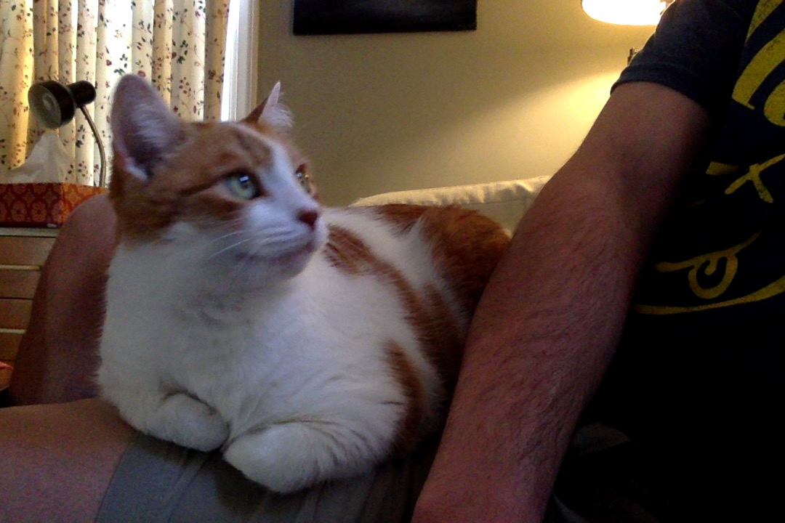

Wednesday, August 26, 2020
The JavaScript translation for the Zork game is more or less done, although there are some major issues to deal with as
well as general testing. At this point, there is a problem with checking room objects and I need a new system for dealing
with incomplete input. Since submitting the input triggers all of the game update code, there doesn't seem to be a way for
those updates to pause and wait for more input. Getting this to work will probably involve creating some flags that get
checked when the input parsing starts.
Two weeks ago my pet cat Emma died of cancer. She was almost 13 years old. She was my first pet, and my closest companion
for many years. I have decided to name this project after her. The profound grief that I feel from losing her has given me
an urgency to find meaning in life and work.

Thursday, August 8, 2020
I have reviewed enough web code on Free Code Camp to start porting the Zork game into JavaScript. This will also be a learning process and probably will
take more time than it seems now, especially since I am starting another class next week. Maybe I can set a goal of having it
completely done and presentable by Halloween.
I am low on time and energy, and feeling somewhat depressed and left out of life. Nevertheless, I am sure that I am where I am supposed
to be and doing what I am supposed to be doing.
Monday, July 27, 2020
Today my goal is to create a text box which can be used to submit text by pressing enter and generate some text in response.
I am also going to read an article on
how to create an application with Spring Boot and React.
I should still have some design books around here, if not, it's a good reason to take a trip to McKay's Books in Greensboro.
Sunday, July 26, 2020
I have been feeling strongly that I need to be spending my time working. I can't just be a passive consumer of things
that other people have created anymore. I am pretty helpless when it comes to art and design (and business), but that isn't going to
prevent me from starting. At some point I will bring some other people onto the team.